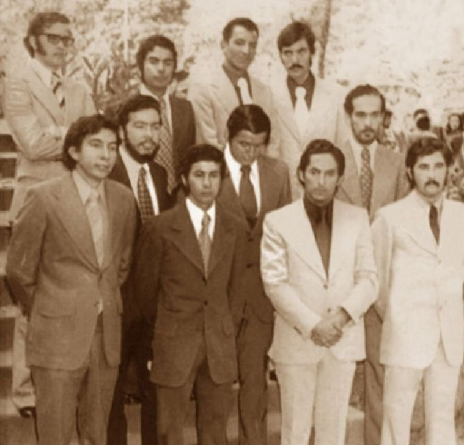
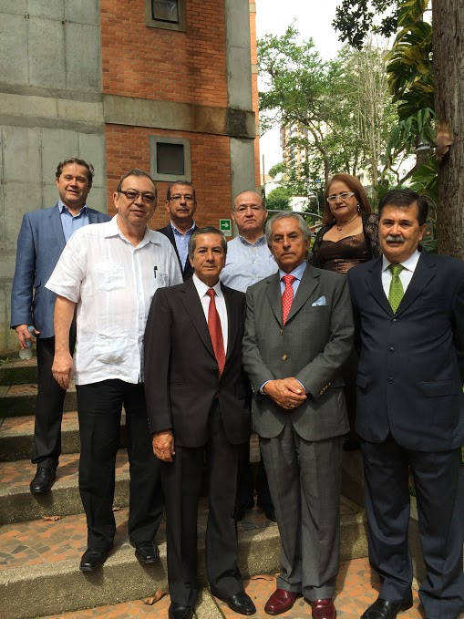

El primer programa académico, que dio vida a lo que hoy conocemos como Universidad, cumple 50 años de existencia, por eso quisimos hacer un repaso por la historia y sus protagonistas, quienes escribieron uno de los capítulos más importantes de la educación superior en la región.
1968 Un sueño llamado EDAF.
Guillermo Schafer Racero, ingeniero industrial y máster en Administración de Empresas y Economía, volvió de cursar sus estudios en el exterior, con el sueño de crear la Escuela de Administración y Finanzas de Bucaramanga.Después de tocar las puertas de la UIS y no obtener respuesta positiva, conversó con don Armando Puyana Puyana quién secundó la idea y puso en marcha la construcción de los salones en la que para ese entonces era la sede del Instituto Caldas (campus El Jardín).
1969 Los primeros estudiantes.
En febrero de este año, inició actividades la Escuela de Administración y Finanzas, EDAF, con 38 estudiantes, seis asignaturas, Schafer Racero como director y profesor, y Eduardo Peña Alvarado, como asistente de dirección y decano académico.
1971 Nuevos rumbos.
Con la Escuela en marcha, Guillermo Schafer se traslada a trabajar a Bogotá. Mientras que la decanatura del programa pasa de manos de Peña Alvarado a Luis Francisco Solano. Los estudiantes de la EDAF compartían espacios con los estudiantes del Instituto Caldas. La única cafetería estaba ubicada en donde hoy se encuentra el Edificio de Ingenierías (antiguo bloque L), allí los estudiantes de la EDAF hacían fiestas los sábados en la tarde.
1974 La EDAF gradúa su primera promoción.
En el auditorio del Instituto Caldas, ubicado en ese momento donde hoy quedan las aulas de informática del edificio de Biblioteca, recibieron su título como administradores de empresas 11 hombres, 5 de ellos pertenecían al grupo con los que el programa inició en febrero de 1969. El decano para ese momento era Álvaro Rueda Gómez.
1979 Nos llamaremos Universidad Autónoma de Bucaramanga.
En septiembre de este año se formaliza el cambio de nombre de la institución a Universidad Autónoma de Bucaramanga, UNAB Corporación Instituto Caldas.
1987 Reconocidos por el Ministerio de Educadión Nacional.
14 de abril de este año, con el Dr. Alberto Montoya Puyana como representante legal, el Ministerio de Educación Nacional otorgó el reconocimiento institucional como Universidad a la Corporación.
2002 Un programa con sello de calidad.
Bajo la decanatura de Álvaro Gómez Ortiz, el programa de Administración de Empresas de la UNAB, se convierte en el primer programa acreditado por el Consejo Nacional de Acreditación, CNA. En 2007 y 2012 se renovó la acreditación por cuatro y seis años respectivamente.
2013 Renovación académica.
Se realizó la reforma curricular que dio lugar al plan de estudios que está hoy vigente para el programa de Administración de Empresas.
Dato: El trabajo y los aportes de Álvaro Zarama Medina, José Andrés García, Sergio Augusto Mestre Sarmiento, César López Bandera, Marina Gutiérrez de Piñeres (e), Jorge Enrique Silva Duarte, Eulalia García Beltrán (e), José Luis Sandoval Duque, William Alberto Ruíz Sarmiento (e), Martha Yolanda Dietes Luna (e), Álvaro Gómez Ortiz y Juan Carlos Hederich Martínez, desde la decanatura fue determinante para consolidar la propuesta educativa con la que cuenta hoy en día el programa.
2014 Reencuentro.
Se realizó un reencuentro con los 11 graduados de la primera promoción para conmemorar los 40 años de creación del programa. Gerardo Dávila Ruíz, Alirio Díaz Tello, Rafael Chaparro, Gerardo González Uribe, Leonardo Porras Martínez, José Antonio Ramírez Gélvez, Álvaro Reyes Martínez, Víctor Julio Serrano Uribe, Raimundo Vanegas Torres y Miguel Antonio Vargas Mayorga, se reunieron.
2016 El reto es cada vez mayor.
Bajo la decanatura de Jorge Raúl Serrano, la Facultad de Ciencias Económicas, Administrativas y Contables, decide iniciar el proceso para obtener acreditación internacional con los programas de Administración de Empresas (presencial), Administración Dual, Economía y Contaduría.